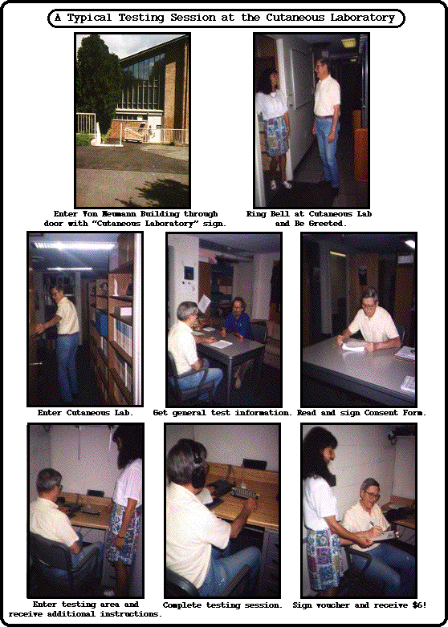

A Test Session at the Princeton Cutaneous Communication Laboratory

A typical testing session at the Cutaneous Laboratory will last from 30-45 minutes, depending on the experiment. The first session in a series usually will last a few minutes longer because there will be a bit more paperwork and additional instructions to provide some general background about the laboratory and the purpose of the study. On subsequent sessions, participants will usually just enter the lab, be taken to their test station, and are able to start with a minimum of re-orientation. Payments are given at the end of each session, and it is made clear to all participants that they are free to end their participation if they feel that they are under any duress. Experiments in the laboratory may last only a single session, two or three sessions, or may extend over the course of several months. The particular study to which an individual might be assigned will be determined, in part, by the amount of time that they can devote to the project. We have had students and older persons who have participated in 200-400 sessions (over the course of several years).

Return to top of this page
Return to Cutaneous Lab Home Page